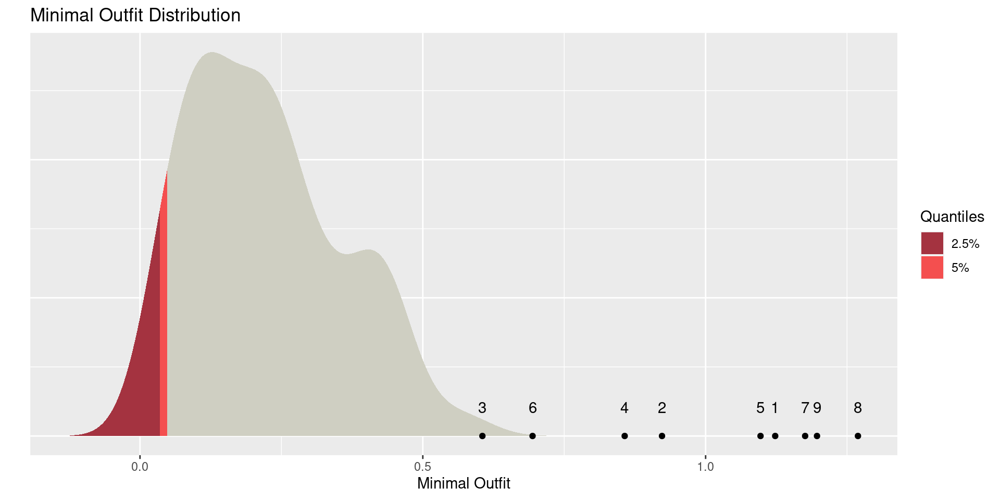
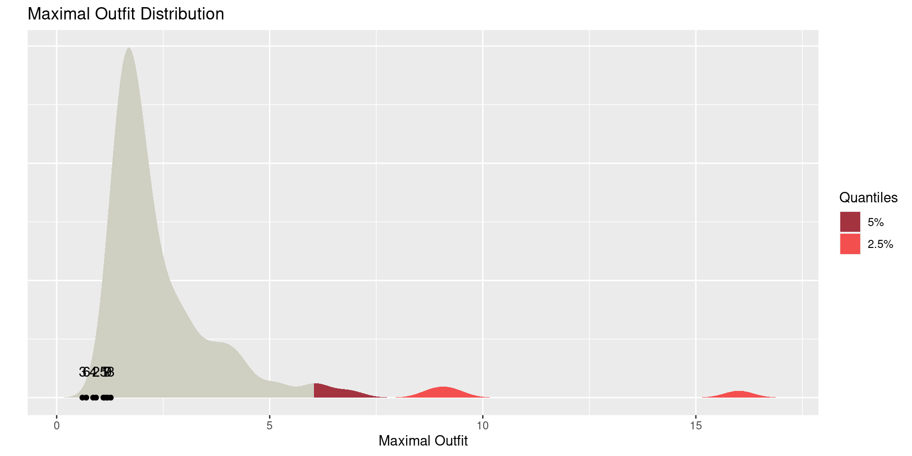

Introduction
1. Estimate the Rasch model
Exercise 1/4
2. Test the Rasch model
Exercise 2/4
FIKA
3. Test local dependence
Exercise 3/4
Dichotomous example
Exercise 4/4
CICC
The Rasch model for polytomous items1 (Erling B. Andersen 1977):
For person \(v = 1,\ldots,n\) the probability of response \(x\) on item \(i = 1,\ldots, k\) is
\[ P(X_{vi}=x|\theta_v=\theta)=\frac{\exp(x\theta+\beta_{ix})}{\sum_{l=1}^{m_i}\exp(l\theta+\beta_{il})} \]
where each item \(i\) has a certain number of response categories, denoted by \(m_i\).
We demonstrate the functionality with an example using data from the The Skin Cancer Quality of Life (SCQoL) Questionnaire.
Using these data we show how to use R to:
Linacre (2022) identified 11 R packages capable of Rasch estimation and analysis.
We focus on
eRm: does conditional ML (like RUMM2030)TAM an ltm: do MML (like ConQuest)Data used in this workshop are disease-specific quality of life (QoL) questionnaires increasingly used to provide patient-reported outcome measures in both malignant and non-malignant disease.
To create, validate and test the psychometrics of the Skin Cancer Quality of Life (SCQoL) questionnaire, which was designed to measure health-related QoL in patients with non-melanoma skin cancer affecting any area and undergoing any therapy.
These data contain…
We load data:
The top six rows of our data are
# A tibble: 6 × 15
ID SC01 SC02 SC03 SC04 SC05 SC06 SC07 SC08 SC09 DLQI SCTOTAL
<chr> <dbl> <dbl> <dbl> <dbl> <dbl> <dbl> <dbl> <dbl> <dbl> <dbl> <dbl>
1 SC1 0 0 0 0 0 0 1 0 0 1 1
2 SC2 1 1 0 0 0 0 0 0 1 2 3
3 SC3 0 3 1 1 0 0 0 1 0 4 6
4 SC4 2 2 2 2 0 1 2 2 2 2 15
5 SC5 0 1 0 1 0 1 1 0 2 1 6
6 SC6 2 3 2 3 2 0 1 1 0 3 14
# … with 3 more variables: FUNCTION <dbl>, EMOTION <dbl>, CONTROL <dbl>We create an object containing the items:
Introduction
1. Estimate the Rasch model
Exercise 1/4
2. Test the Rasch model
Exercise 2/4
FIKA
3. Test local dependence
Exercise 3/4
Dichotomous example
Exercise 4/4
CICC
eRm) packageThe eRm package in R provides users with a considerable set of tools for Rasch modelling for scale evaluation and general modelling.
We provide a brief introduction to Rasch modelling followed by a review of the key features of the eRm package for scale evaluation.
eRm packageThe eRm package uses conditional maximum likelihood (CML) for the dichotomous and polytomous models. CML (E. B. Andersen 1972) may be used to estimate models for which there are sufficient statistics available, as is the case for the family of Rasch models. That is, the item mean and person mean are sufficient statistics for the item and person measures, respectively.
CML can produce consistent maximum likelihood estimates because it separates the item and person parameter estimates by conditioning the estimation of the likelihood function on the person sufficient statistics (Andersen, Citation1972; de Ayala, Citation2009).
The person measures are estimated in eRm in a step following the estimation of item measures using JML.
This two-step process sidesteps the limitations of JML because (1) the parameters are not estimated simultaneously and (2) the item parameters estimated through CML can be treated as “known” (i.e., fixed) in order to estimate the person measures.
The estimates for persons and items can be viewed in the person-item map using the plotPImap command. CML is used for the dichotomous (RM), partial credit (PCM) and rating scale (RSM) models as well as the linear versions of these models (LLTM, LPCM, LRSM; commands shown in parentheses).
The Rasch model is fit to data using the PCM function from the eRm package:
Results of PCM estimation:
Call: PCM(X = items)
Conditional log-likelihood: -504.624
Number of iterations: 53
Number of parameters: 25
Item (Category) Difficulty Parameters (eta): with 0.95 CI:
Estimate Std. Error lower CI upper CI
SC01.c2 0.805 0.415 -0.009 1.619
SC02.c1 -2.549 0.334 -3.205 -1.894
SC02.c2 -2.964 0.391 -3.732 -2.197
SC02.c3 -2.691 0.439 -3.551 -1.831
SC03.c1 -0.696 0.260 -1.205 -0.186
SC03.c2 -0.299 0.353 -0.990 0.393
SC03.c3 1.676 0.650 0.402 2.950
SC04.c1 -1.726 0.289 -2.292 -1.161
SC04.c2 -1.987 0.348 -2.669 -1.306
SC04.c3 -0.815 0.476 -1.748 0.118
SC05.c1 2.465 0.514 1.457 3.472
SC05.c2 3.348 0.734 1.909 4.787
SC05.c3 3.720 0.762 2.227 5.212
SC06.c1 -0.074 0.253 -0.570 0.422
SC06.c2 1.422 0.468 0.505 2.338
SC06.c3 3.850 1.036 1.819 5.880
SC07.c1 -2.087 0.275 -2.627 -1.547
SC07.c2 -1.197 0.388 -1.957 -0.437
SC07.c3 0.016 0.552 -1.066 1.098
SC08.c1 0.377 0.279 -0.170 0.924
SC08.c2 1.329 0.441 0.464 2.194
SC08.c3 2.727 0.679 1.397 4.058
SC09.c1 -1.693 0.284 -2.250 -1.136
SC09.c2 -1.773 0.353 -2.464 -1.082
SC09.c3 -0.847 0.462 -1.752 0.058
Item Easiness Parameters (beta) with 0.95 CI:
Estimate Std. Error lower CI upper CI
beta SC01.c1 0.335 0.253 -0.162 0.831
beta SC01.c2 -0.805 0.415 -1.619 0.009
beta SC02.c1 2.549 0.334 1.894 3.205
beta SC02.c2 2.964 0.391 2.197 3.732
beta SC02.c3 2.691 0.439 1.831 3.551
beta SC03.c1 0.696 0.260 0.186 1.205
beta SC03.c2 0.299 0.353 -0.393 0.990
beta SC03.c3 -1.676 0.650 -2.950 -0.402
beta SC04.c1 1.726 0.289 1.161 2.292
beta SC04.c2 1.987 0.348 1.306 2.669
beta SC04.c3 0.815 0.476 -0.118 1.748
beta SC05.c1 -2.465 0.514 -3.472 -1.457
beta SC05.c2 -3.348 0.734 -4.787 -1.909
beta SC05.c3 -3.720 0.762 -5.212 -2.227
beta SC06.c1 0.074 0.253 -0.422 0.570
beta SC06.c2 -1.422 0.468 -2.338 -0.505
beta SC06.c3 -3.850 1.036 -5.880 -1.819
beta SC07.c1 2.087 0.275 1.547 2.627
beta SC07.c2 1.197 0.388 0.437 1.957
beta SC07.c3 -0.016 0.552 -1.098 1.066
beta SC08.c1 -0.377 0.279 -0.924 0.170
beta SC08.c2 -1.329 0.441 -2.194 -0.464
beta SC08.c3 -2.727 0.679 -4.058 -1.397
beta SC09.c1 1.693 0.284 1.136 2.250
beta SC09.c2 1.773 0.353 1.082 2.464
beta SC09.c3 0.847 0.462 -0.058 1.752 [1] "X" "X01" "model" "loglik" "npar"
[6] "iter" "convergence" "etapar" "se.eta" "hessian"
[11] "betapar" "se.beta" "W" "call" Item (Category) Difficulty Parameters (eta):
SC01.c2 SC02.c1 SC02.c2 SC02.c3 SC03.c1 SC03.c2 SC03.c3
0.8051638 -2.5494861 -2.9642253 -2.6909648 -0.6955862 -0.2985234 1.6757847
SC04.c1 SC04.c2 SC04.c3 SC05.c1 SC05.c2 SC05.c3 SC06.c1
-1.7264518 -1.9871956 -0.8147899 2.4645109 3.3480160 3.7197305 -0.0742441
SC06.c2 SC06.c3 SC07.c1 SC07.c2 SC07.c3 SC08.c1 SC08.c2
1.4216546 3.8496035 -2.0872293 -1.1971882 0.0158101 0.3771348 1.3287858
SC08.c3 SC09.c1 SC09.c2 SC09.c3
2.7274744 -1.6930711 -1.7729178 -0.8472615 Item Easiness Parameters (beta):
beta SC01.c1 beta SC01.c2 beta SC02.c1 beta SC02.c2 beta SC02.c3 beta SC03.c1
0.3345343 -0.8051638 2.5494861 2.9642253 2.6909648 0.6955862
beta SC03.c2 beta SC03.c3 beta SC04.c1 beta SC04.c2 beta SC04.c3 beta SC05.c1
0.2985234 -1.6757847 1.7264518 1.9871956 0.8147899 -2.4645109
beta SC05.c2 beta SC05.c3 beta SC06.c1 beta SC06.c2 beta SC06.c3 beta SC07.c1
-3.3480160 -3.7197305 0.0742441 -1.4216546 -3.8496035 2.0872293
beta SC07.c2 beta SC07.c3 beta SC08.c1 beta SC08.c2 beta SC08.c3 beta SC09.c1
1.1971882 -0.0158101 -0.3771348 -1.3287858 -2.7274744 1.6930711
beta SC09.c2 beta SC09.c3
1.7729178 0.8472615 The default settings fix the scale by fixing the sum of item easiness parameters to zero. The scale can easily be set by fixing the first easiness (beta) to 0 instead by using sum0 = FALSE as an argument in the function. These options provide users for flexibility in modeling and even greater flexibility can be achieved by utilizing the design matrix formulation.
Another useful feature for examining the relationship between persons and items is the person-item map. These figures help provide a representation of how the difficulty of items relates to the person-parameters for the fitted Rasch model.
This map is created using plotPImap(fit, sorted = TRUE), where the argument sorted = TRUE is not necessary, but will help significantly with interpretation and identifying how items are distributed across the person parameter distributions.
Different R packages offer an array of tests and statistics to assist with diagnosing multiple areas of potential model misfit, e.g.,
Information-weighted mean square (INFIT) and unweighted mean square (OUTFIT) estimates are provided for each item and each person, which is customary in evaluating Rasch model-data fit. These estimates along with their \(\chi^2\) values, degrees of freedom, p-value, and t-test statistics are available with the itemfit and personfit commands, respectively, for items and persons. The INFIT t test statistics can also be plotted for items or persons using the plotPImap command, in which users may plot with or without confidence intervals. This plot may be particularly helpful in examining many items or persons efficiently.
Using the LRtest command. The procedure tests for person homogeneity, which can be an indication of differential item function or violations of monotonicity, by estimating the item measures using two or three subgroups from the sample. Two or three subgroups are the only options, but this will likely meet most users’ needs. Invariance between the two or three sets of parameter estimates supports the model-data fit. The LRtest command produces the LR value (i.e., \(\sim \chi^2\)), degrees of freedom and p value.
By default, two groups are formed based on raw scores above or below the median. Subgroups can also be created by the user based on a variable coded as a factor (e.g., sex) or based on the distribution of a quantitative variable. Because the test divides the sample into subgroups, a sufficiently large sample size is an important consideration to ensure that all subgroups are large enough.
Available for testing dimensionality, which is a different approach from the conventional method of conducting principal components analysis on the standardized residual matrix. Martin-Löf (Citation1970) proposed a test of unidimensionality for dichotomous Rasch models that is a likelihood ratio test for comparing the null hypothesis of unidimensionality against the alternative hypothesis of two dimensions.
Christensen, Bjorner, Kreiner, and Petersen (Citation2002) generalized the test for (1) polytomous models and (2) an alternative hypothesis with more than two dimensions.
The MLoef procedure splits the items into two subgroups using the median (default) or mean of the item raw scores, or the user can specify a grouping of two or three subgroups of items.
The command produces the log-likelihood value for each item grouping as well as for the overall model. The MLoef procedure also produces the likelihood ratio value, degrees of freedom and p value, which is the output that is examined when making a decision about the tenability of the unidimensionality assumption.
The MLoef command is a large sample approximation (i.e., \(\sim \chi^2\)), but the eRm package also provides an exact test using the NPtest command. This command offers 12 different methods for testing unidimensionality with the default method checking for local dependence based on inter-item correlations. (Verguts2000) showed that the Martin-Löf test is a bit conservative unless used with a large sample but that it has appropriate power when the split of items is correct. (Christensen2007) showed that the Martin-Löf test works well but notes the requirement of a very large sample for the null distribution to follow the asymptotic \(\chi^2\) distribution. In light of the available research on the Martin-Löf test and its generalization, the exact test (NPtest) may be an attractive option for some users.
Introduction
1. Estimate the Rasch model
Exercise 1/4
2. Test the Rasch model
Exercise 2/4
FIKA
3. Test local dependence
Exercise 3/4
Dichotomous example
Exercise 4/4
CICC
Create, validate, and test the psychometrics of the Actinic Keratosis Quality of Life (AKQoL) questionnaire, which was designed to measure health-related QoL in patients with actinic keratosis.
Recreate AKQOL, Fig.2:
![[20230327123258.png]]1.1) Load data AKQOL.csv into R.
1.2) Fit the Rasch model using the PCM() function from the eRm package.
1.3) Show results of the RM estimation using the summary() function.
1.4) Examine the relationship between persons and items via the person-item map (plotPImap()).
Introduction
1. Estimate the Rasch model
Exercise 1/4
2. Test the Rasch model
Exercise 2/4
FIKA
3. Test local dependence
Exercise 3/4
Dichotomous example
Exercise 4/4
CICC
The point of the Rasch model is very often to test whether the assumptions (unidimensionality, local independence, sufficiency, no DIF and monotonicity) are met.
Assumptions met \(\Rightarrow\) Rasch model fit
Rasch model misfit \(\Rightarrow\) assumptions not met
Testing the Rasch model in R can include the following steps
For the given model, more detailed information about the fitted model can be investigated next.
For dichotomous scales, the item characteristic curves for all items can be obtained using the plotICC command. The command plots the ICC for each item on a separate window so that each item can be inspected individually.
All the ICCs can be plotted on the same window as well, using plotjointICC,
A Conditional ICC (CICC) is a curve describing the expected item mean as a function of the total score. It is possible to make an empirical CICC based on the observed data as both the empirical expected item score and the total scores can be calculated from the data. This empirical curve can then be compared to the model-based CICC to visualize item fit.
The fit of these data to the Rasch model can be evaluated in numerous ways in the eRm package. The package supports tests such as Anderson’s likelihood ratio test, Wald-type tests, Martin-Löf test, various nonparametric tests, item and person fit indices, and graphical procedures. Testing for unidimensionality based on the fitted Rasch model using the Martin-Löf test resulted in
There is no evidence that unidimensionality should not be tenable.
Other tests for unidimensionality are available through NPtest function. Then, if we find evidence of unidimensionality then an investigation of the item fit to the model could be the next step.
The item fit information is obtained through a two-step process. First, we compute the person parameters along will all the residuals. Then, the investigation of the item fit statistics is a straightforward extension. The item fit statistics (i.e., INFIT/OUTFIT \(t\) or MSQ) are obtained using
Itemfit Statistics:
Chisq df p-value Outfit MSQ Infit MSQ Outfit t Infit t Discrim
SC01 95.274 91 0.359 1.036 1.004 0.236 0.079 0.504
SC02 73.911 91 0.904 0.803 0.829 -1.441 -1.282 0.618
SC03 51.145 91 1.000 0.556 0.620 -2.662 -2.874 0.809
SC04 69.673 91 0.953 0.757 0.747 -1.743 -1.942 0.696
SC05 69.663 91 0.953 0.757 1.076 0.041 0.334 0.393
SC06 59.351 91 0.996 0.645 0.812 -1.564 -1.067 0.635
SC07 99.203 91 0.261 1.078 1.029 0.550 0.241 0.498
SC08 100.944 91 0.223 1.097 1.076 0.399 0.449 0.514
SC09 96.824 91 0.318 1.052 1.060 0.393 0.462 0.516we cannot trust the P-values, because Chisq doeas not have a \(\chi^2\)-distribution. Nobody knows the asymptotic distribution of INFIT and OUTFIT. We need the R package iarm (item analysis in Rasch models).
this output shows * whenever a p-value is smaller then 5%.
Outfit se pvalue padj sig Infit se pvalue padj sig
SC01 1.123 0.213 0.564 1 1.07 0.146 0.633 1
SC02 0.923 0.137 0.572 1 0.947 0.137 0.701 1
SC03 0.605 0.188 0.036 0.647 0.679 0.15 0.032 0.582
SC04 0.857 0.139 0.304 1 0.841 0.14 0.254 1
SC05 1.097 0.96 0.919 1 1.37 0.375 0.324 1
SC06 0.694 0.247 0.215 1 0.882 0.174 0.498 1
SC07 1.176 0.15 0.239 1 1.139 0.153 0.364 1
SC08 1.269 0.321 0.401 1 1.215 0.191 0.261 1
SC09 1.197 0.141 0.161 1 1.202 0.141 0.151 1
P value adjustment: BHSimulate 1000 data sets based on \(\hat\beta\) and \(\hat\theta\) Look at empirical distribution of \(\chi^2\) for item of interest
Load R package:
Create data matrix:
Simulate item responses and fit statistics:
plot(x) +
geom_point(data = outfits,
colour = "black", size = 1.5) +
geom_text(data = outfits, aes(label = 1:nrow(outfits)), vjust = -2)
plot(x, type = "Outfit", extreme = "max") +
geom_point(data = outfits,
colour = "black", size = 1.5) +
geom_text(data = outfits, aes(label = 1:nrow(outfits)), vjust = -2) 

Item-total correlations and item-restscore correlations are routinely reported in classical test theory. Kreiner (2011) used the simple structure in the Rasch model to compute the expected values of the item-restscore correlation:
observed expected se pvalue padj.BH sig
SC01 0.5040 0.5882 0.0976 0.3878 0.6160
SC02 0.6527 0.6288 0.0613 0.6963 0.7697
SC03 0.7866 0.6082 0.0591 0.0026 0.0230 *
SC04 0.6849 0.6190 0.0607 0.2778 0.6160
SC05 0.6079 0.6928 0.1149 0.4602 0.6160
SC06 0.7044 0.5880 0.0727 0.1098 0.4941
SC07 0.5647 0.6168 0.0736 0.4791 0.6160
SC08 0.5864 0.6132 0.0916 0.7697 0.7697
SC09 0.5409 0.6199 0.0805 0.3264 0.6160 Introduction
1. Estimate the Rasch model
Exercise 1/4
2. Test the Rasch model
Exercise 2/4
FIKA
3. Test local dependence
Exercise 3/4
Dichotomous example
Exercise 4/4
CICC
2.1)
2.2)
2.3)
2.4)
Introduction
1. Estimate the Rasch model
Exercise 1/4
2. Test the Rasch model
Exercise 2/4
FIKA
3. Test local dependence
Exercise 3/4
Dichotomous example
Exercise 4/4
CICC
Introduction
1. Estimate the Rasch model
Exercise 1/4
2. Test the Rasch model
Exercise 2/4
FIKA
3. Test local dependence
Exercise 3/4
Dichotomous example
Exercise 4/4
CICC
Introduction
1. Estimate the Rasch model
Exercise 1/4
2. Test the Rasch model
Exercise 2/4
FIKA
3. Test local dependence
Exercise 3/4
Dichotomous example
Exercise 4/4
CICC
3.1)
3.2)
3.3)
3.4)
Introduction
1. Estimate the Rasch model
Exercise 1/4
2. Test the Rasch model
Exercise 2/4
FIKA
3. Test local dependence
Exercise 3/4
Dichotomous example
Exercise 4/4
CICC
We load data:
The top six rows of our data are
# A tibble: 6 × 16
...1 ID SC01 SC02 SC03 SC04 SC05 SC06 SC07 SC08 SC09 DLQI
<dbl> <chr> <dbl> <dbl> <dbl> <dbl> <dbl> <dbl> <dbl> <dbl> <dbl> <dbl>
1 1 SC1 1 1 1 1 1 1 0 1 1 1
2 2 SC2 0 0 1 1 1 1 1 1 0 2
3 3 SC3 1 0 0 0 1 1 1 0 1 4
4 4 SC4 0 0 0 0 1 0 0 0 0 2
5 5 SC5 1 0 1 0 1 0 0 1 0 1
6 6 SC6 0 0 0 0 0 1 0 0 1 3
# … with 4 more variables: SCTOTAL <dbl>, FUNCTION <dbl>, EMOTION <dbl>,
# CONTROL <dbl>Many of the responses are 1’s, which makes sense given that a large proportion of responses are not on the “Not at all” side of the response scale. Based on the agreeable response versus a disagreeable response, these data may be reflective of a person’s level of QoL.
We create an object containing the items:
| SC01 | SC02 | SC03 | SC04 | SC05 | SC06 | SC07 | SC08 | SC09 |
|---|---|---|---|---|---|---|---|---|
| 1 | 1 | 1 | 1 | 1 | 1 | 0 | 1 | 1 |
| 0 | 0 | 1 | 1 | 1 | 1 | 1 | 1 | 0 |
| 1 | 0 | 0 | 0 | 1 | 1 | 1 | 0 | 1 |
| 0 | 0 | 0 | 0 | 1 | 0 | 0 | 0 | 0 |
| 1 | 0 | 1 | 0 | 1 | 0 | 0 | 1 | 0 |
| 0 | 0 | 0 | 0 | 0 | 1 | 0 | 0 | 1 |
The Rasch model is fit to data using the RM function from the eRm package:
Results of RM estimation:
Call: RM(X = items)
Conditional log-likelihood: -225.9824
Number of iterations: 15
Number of parameters: 8
Item (Category) Difficulty Parameters (eta): with 0.95 CI:
Estimate Std. Error lower CI upper CI
SC02 2.114 0.300 1.526 2.702
SC03 -0.009 0.244 -0.488 0.470
SC04 1.243 0.261 0.732 1.754
SC05 -3.150 0.402 -3.938 -2.362
SC06 -0.916 0.253 -1.412 -0.421
SC07 1.387 0.265 0.867 1.906
SC08 -1.254 0.261 -1.765 -0.743
SC09 1.173 0.259 0.666 1.680
Item Easiness Parameters (beta) with 0.95 CI:
Estimate Std. Error lower CI upper CI
beta SC01 0.588 0.248 0.102 1.074
beta SC02 -2.114 0.300 -2.702 -1.526
beta SC03 0.009 0.244 -0.470 0.488
beta SC04 -1.243 0.261 -1.754 -0.732
beta SC05 3.150 0.402 2.362 3.938
beta SC06 0.916 0.253 0.421 1.412
beta SC07 -1.387 0.265 -1.906 -0.867
beta SC08 1.254 0.261 0.743 1.765
beta SC09 -1.173 0.259 -1.680 -0.666 [1] "X" "X01" "model" "loglik" "npar"
[6] "iter" "convergence" "etapar" "se.eta" "hessian"
[11] "betapar" "se.beta" "W" "call" Item (Category) Difficulty Parameters (eta):
SC02 SC03 SC04 SC05 SC06 SC07
2.113940170 -0.008710932 1.243258218 -3.150069040 -0.916295932 1.386739984
SC08 SC09
-1.254001758 1.172938420 Item Easiness Parameters (beta):
For dichotomous scales, the item characteristic curves for all items can be obtained using the plotICC command. The command plots the ICC for each item on a separate window so that each item can be inspected individually.
All the ICCs can be plotted on the same window as well, using plotjointICC:
Testing local dependence can be done by removing an item, fitting the Rasch model to the remaining items, splitting with respect to the removed item. The general method for testing local dependence in IRT is Yens Q3
We use the sirt (supplementary IRT) package for this:
We fit a Rasch model using sirt and save estimates \(\hat\beta\) of item parameters and estimate person locations \(\hat\theta\) (we use Warms weighted MLE)
------------------------------------------------------------
Semiparametric Marginal Maximum Likelihood Estimation
Raschtype Model with generalized logistic link function: alpha1= 0 , alpha2= 0
------------------------------------------------------------
...........................................................
Iteration 1 2023-03-24 12:34:22
Deviance=944.0993
Maximum b parameter change=0.485539
...........................................................
Iteration 2 2023-03-24 12:34:22
Deviance=925.8288 | Deviance change=18.270519
Maximum b parameter change=0.137751
...........................................................
Iteration 3 2023-03-24 12:34:22
Deviance=917.0894 | Deviance change=8.739389
Maximum b parameter change=0.123445
...........................................................
Iteration 4 2023-03-24 12:34:22
Deviance=912.2001 | Deviance change=4.889347
Maximum b parameter change=0.101295
...........................................................
Iteration 5 2023-03-24 12:34:22
Deviance=909.6828 | Deviance change=2.51732
Maximum b parameter change=0.077439
...........................................................
Iteration 6 2023-03-24 12:34:22
Deviance=908.4566 | Deviance change=1.226168
Maximum b parameter change=0.056295
...........................................................
Iteration 7 2023-03-24 12:34:22
Deviance=907.8793 | Deviance change=0.577297
Maximum b parameter change=0.039492
...........................................................
Iteration 8 2023-03-24 12:34:22
Deviance=907.6117 | Deviance change=0.267647
Maximum b parameter change=0.027037
...........................................................
Iteration 9 2023-03-24 12:34:22
Deviance=907.4874 | Deviance change=0.124284
Maximum b parameter change=0.018221
...........................................................
Iteration 10 2023-03-24 12:34:22
Deviance=907.4287 | Deviance change=0.058704
Maximum b parameter change=0.012169
...........................................................
Iteration 11 2023-03-24 12:34:22
Deviance=907.4001 | Deviance change=0.028582
Maximum b parameter change=0.008093
...........................................................
Iteration 12 2023-03-24 12:34:22
Deviance=907.3856 | Deviance change=0.014486
Maximum b parameter change=0.005381
...........................................................
Iteration 13 2023-03-24 12:34:22
Deviance=907.3779 | Deviance change=0.007679
Maximum b parameter change=0.003586
...........................................................
Iteration 14 2023-03-24 12:34:22
Deviance=907.3737 | Deviance change=0.004257
Maximum b parameter change=0.002401
...........................................................
Iteration 15 2023-03-24 12:34:22
Deviance=907.3712 | Deviance change=0.002455
Maximum b parameter change=0.001619
...........................................................
Iteration 16 2023-03-24 12:34:22
Deviance=907.3698 | Deviance change=0.001462
Maximum b parameter change=0.001101
...........................................................
Iteration 17 2023-03-24 12:34:22
Deviance=907.3689 | Deviance change=0.000893
Maximum b parameter change=0.000756
...........................................................
Iteration 18 2023-03-24 12:34:22
Deviance=907.3683 | Deviance change=0.000555
Maximum b parameter change=0.000525
...........................................................
Iteration 19 2023-03-24 12:34:22
Deviance=907.368 | Deviance change=0.000349
Maximum b parameter change=0.000369
...........................................................
Iteration 20 2023-03-24 12:34:22
Deviance=907.3677 | Deviance change=0.000222
Maximum b parameter change=0.000263
...........................................................
Iteration 21 2023-03-24 12:34:22
Deviance=907.3676 | Deviance change=0.000142
Maximum b parameter change=0.000189
...........................................................
Iteration 22 2023-03-24 12:34:22
Deviance=907.3675 | Deviance change=9.1e-05
Maximum b parameter change=0.000138
...........................................................
Iteration 23 2023-03-24 12:34:22
Deviance=907.3674 | Deviance change=5.9e-05
Maximum b parameter change=0.000102
...........................................................
Iteration 24 2023-03-24 12:34:22
Deviance=907.3674 | Deviance change=3.8e-05
Maximum b parameter change=7.7e-05
------------------------------------------------------------
Start: 2023-03-24 12:34:22
End: 2023-03-24 12:34:22
Time difference of 0.06056738 secs
Difference: 0.06056738
------------------------------------------------------------
WLE Reliability= 0.75 and now we can calculate Yen’s Q3 statistic
Yen's Q3 Statistic based on an estimated theta score
*** 9 Items | 36 item pairs
*** Q3 Descriptives
M SD Min 10% 25% 50% 75% 90% Max
-0.118 0.131 -0.422 -0.282 -0.194 -0.110 -0.044 0.002 0.240 Conventional interpretation: correlations should be close to zero. A large value is evidence of a problem with the scale, but since we do not know the asymptotic distribution we have to rely on a rule of thumb to decide when to reject model fit. An extensive simulation study indicated that “0.2 above the average” works well in many situations.
Introduction
1. Estimate the Rasch model
Exercise 1/4
2. Test the Rasch model
Exercise 2/4
FIKA
3. Test local dependence
Exercise 3/4
Dichotomous example
Exercise 4/4
CICC
4.1) Load dichotomised data AKQOL01.csv into R
4.2) Fit a Rasch model using the RM() function
4.3) Visualise item fit using, e.g., CICCplot() from the RASCHplot package or plotICC() and plotjointICC() from the eRm package.
4.4) Calculate Yen’s Q3 statistic
Introduction
1. Estimate the Rasch model
Exercise 1/4
2. Test the Rasch model
Exercise 2/4
FIKA
3. Test local dependence
Exercise 3/4
Dichotomous example
Exercise 4/4
CICC
the distribution of the total score is
\[ P(R_{v}=r|\theta_v=\theta)=\frac{\exp(r\theta)\gamma_r(\boldsymbol{\beta})}{\prod_{i=1}^k\sum_{l=1}^{m_i}\exp(l\theta+\beta_{il})} \]
where \(\boldsymbol{\beta}\) is the vector of all item (easiness) parameters and
\[ \gamma_r(\boldsymbol{\beta})=\sum_{(x_i)}\exp\left(\sum_{i=1}^k\beta_{ix_i}\right) \]
are so-called \(\gamma\)-functions (Andersen, 1995; formula 15.20).. In (\(\ref{gamma}\)) the summation is over the set \(\{(x_i):\sum_{i=1}^kx_i=r\}\) of all response vectors with total score \(r\) and the \(\gamma\)-functions can be calculated using the recursive formula
\[ \gamma_r(\boldsymbol{\beta})=\gamma_r^{(i)}(\boldsymbol{\beta})+\sum_{x=1}^{m_i}\exp(\beta_{ix})\gamma_{r-x}^{(i)}, \]
where \(\gamma_{r-x}^{(i)}\) is the \(\gamma\)-function (\(\ref{gamma}\)) evaluated without item \(i\). This means that the conditional probabilities of item scores given total scores can be written
\[ P(X_{vi}=x|R_{v}=r)=\frac{\exp(\beta_{ix})\gamma_{r-x}^{(i)}(\boldsymbol{\beta})}{\gamma_r(\boldsymbol{\beta})} \]
Note that (\(\ref{condprob}\)) is independent of the value of \(\theta_v\) due to the sufficiency of the total score in the Rasch model. Based on (\(\ref{condprob}\)) it is straight-forward to calculate the conditional expectation of item scores given total scores
\[ E_{ri}=E(X_{rv}|R_v=r)= \sum_{x=0}^{m_i} x\frac{\exp(\beta_{ix})\gamma_{r-x}^{(i)}(\boldsymbol{\beta})}{\gamma_r(\boldsymbol{\beta})} \]
(Andersen, 1995; formula 15.22).